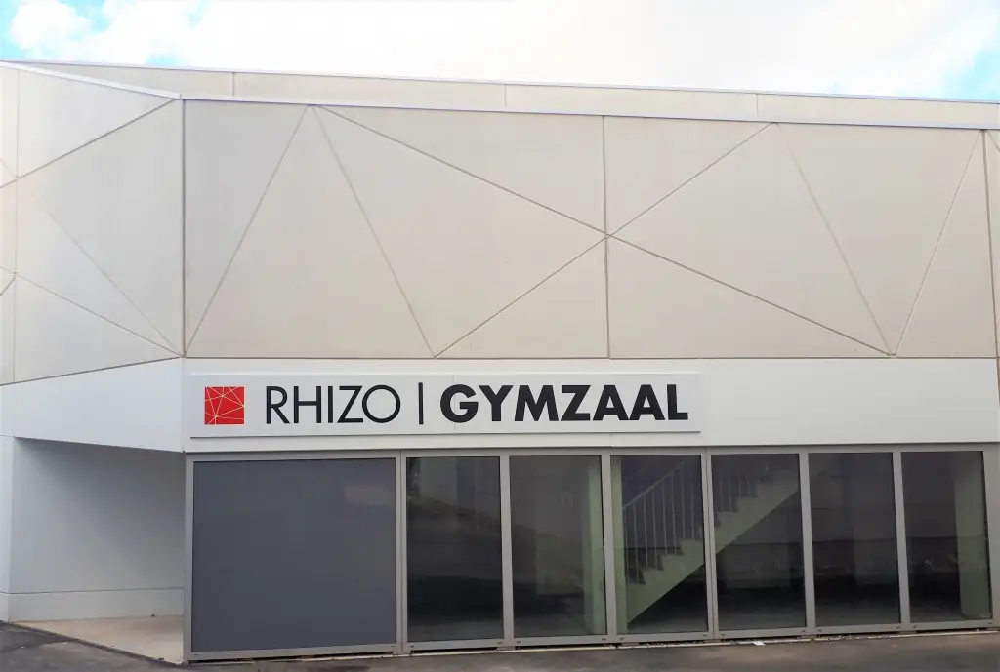

Sportcomplex Rhizo te Kortrijk
Over deze realisatie
Vuylsteke-Eiffage bouwde de nieuwe sporthal voor het RHIZO, de Katholieke Scholengroep in Kortrijk. Deze kwam op exact dezelfde plaats van de vorige zaal waarbij , intussen vier jaar geleden, een torenkraan op de oude zaal terecht kwam waardoor die volledig vernield was. Gelukkig was het toen net mooi weer en waren geen leerlingen in de zaal, wel kwam de kraanman helaas om het leven.
De nieuwe turnzaal oogt erg mooi en kon in gebruik genomen worden met de start van het nieuwe schooljaar '19-'20.
De grondige renovatie en kleine uitbreiding van de danszaal voorziet de school van een bijkomende balletzaal en de daarbij horende kleed- en doucheruimtes.
Volgende schilderwerken zijn uitgevoerd binnen dit project:
- Alle deuren van het complex werden geschilderd of in vernis geplaatst
- Het onderdak van de grote speelplaats kreeg een nieuwe lik verf
- Een gedeelte van de betonpanelen buiten kreeg een witte kleur
- Een gedeelte parament buiten alsook binnen werd voorzien van een kaleien jasje
- Alle muren van de kleedkamers werden voorzien van vliesbehang + schilderen
- Heel wat schrijnwerk op maat werd voorzien van vernis
Sfeerbeelden
Sfeerbeelden
Meer realisaties


Een mooi resultaat begint met een goed gesprek.
Tijdens een vrijblijvend plaatsbezoek luisteren we naar uw wensen, geven we professioneel advies en bekijken we samen de mogelijkheden voor uw schilderwerken of interieurafwerking.
Na het vrijblijvende plaatsbezoek ontvangt u een duidelijke offerte en planning. Liever eerst een vraag stellen? Contacteer ons.